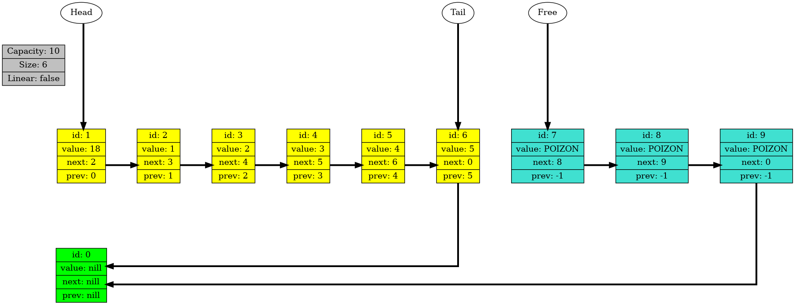
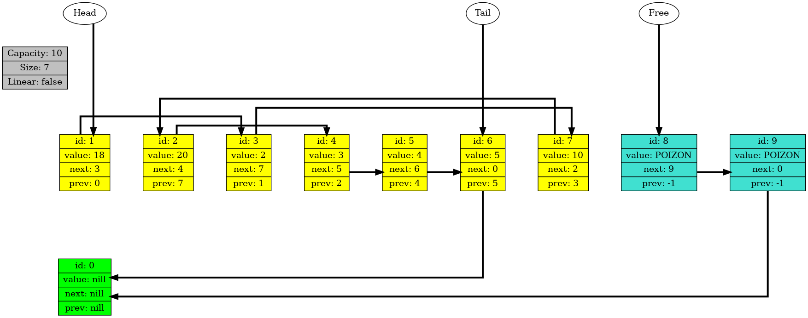
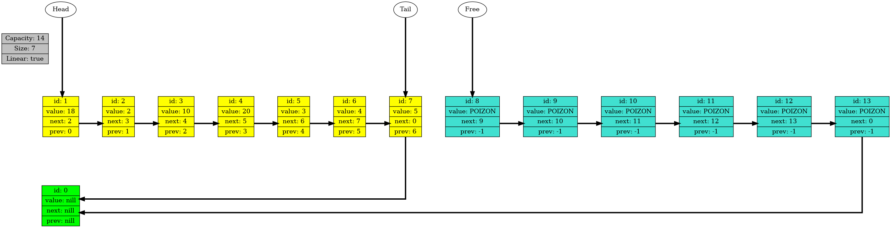

Called from file: src/main.cpp, function: int main(int, const char**), line: 22

-----------------------------------------------------------------------------------------------------------------------------------------------
Called from file: src/main.cpp, function: int main(int, const char**), line: 28

-----------------------------------------------------------------------------------------------------------------------------------------------
Called from file: src/main.cpp, function: int main(int, const char**), line: 32

-----------------------------------------------------------------------------------------------------------------------------------------------